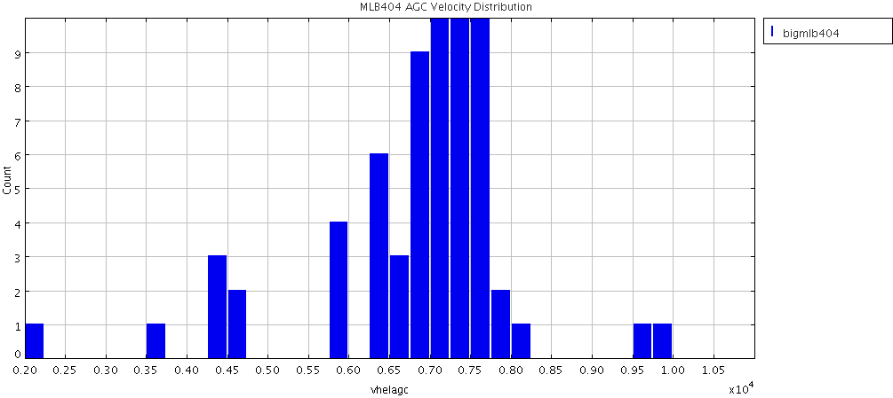
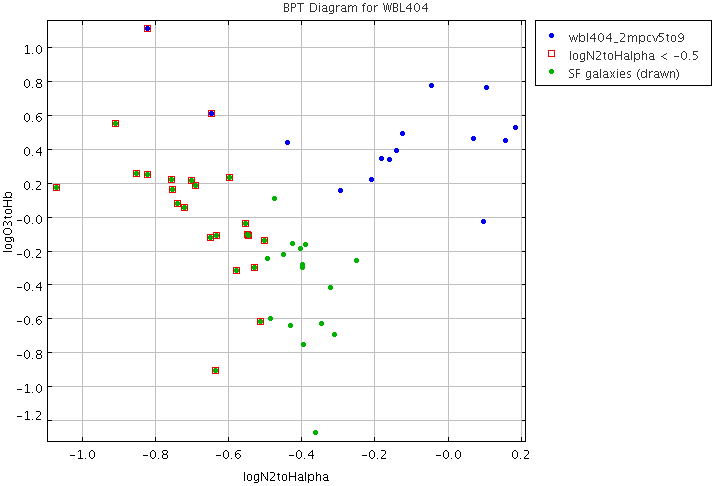

RA,Dec RA,Dec(deg) R(2Mpc) nz nopt cz sig logsig sig logLx dist*
WBL404 NRGb206 1224026+092125 186.0108 9.35695 1.2 7 27 7256 166 2.66 0.09 <41.90 0.00 108 **UWSP
At this distance, 2 Mpc = 1.1 degrees.
so the box should be:
RA > 184.93 & RA < 187.10
Dec > 8.26 & Dec < 10.46
First use the AGC to look at the velocity histogram
Make subset from agcnorthminus1.csv
RAdeg > 184.93 & RAdeg < 187.10 & Decdeg > 8.26 & Decdeg < 10.46
245 galaxies...
Restrict the velocity range somewhat...

It looks like a velocity windown of 5000 < Vhel < 9000 should work.
Further restricting the velocity range to:
RAdeg > 184.93 & RAdeg < 187.10 & Decdeg > 8.26 & Decdeg < 10.46 & Vhelagc > 5000 & Vhelagc < 9000
... results in 84 objects in the AGC.
Now go to a57.1245wOC.full.csv; find all the entries. Subset definition: RAdeg > 184.93 & RAdeg < 187.10 & Decdeg > 8.26 & Decdeg < 10.46 & V21 > 5000 & V21 < 9000 ra > 184.93 & ra < 187.10 & dec > 8.26 & dec < 10.46 & hv50 > 5000 & hv50 < 9000 Returns 23 entries... (saved in wbl404_a57.txt) # agcnum ra dec hv50 hverr iw50 iwerr sintp serr sn rms icode 220374 184.93333 9.14861 5865 14 211 27 1.86 0.09 12.6 2.27 1 7383 185.00542 8.60722 7374 2 294 3 8.31 0.11 42.6 2.54 1 220401 185.11125 9.42417 7534 16 111 32 0.54 0.08 3.9 2.96 5 220405 185.13873 9.85333 5896 0 342 1 2.86 0.08 19.5 1.77 1 223471 185.35376 9.62083 6375 4 126 7 0.64 0.05 6.6 1.91 1 224354 185.50041 10.18056 7303 4 62 8 0.93 0.05 14.0 1.89 1 226132 185.50584 10.42778 6471 0 96 1 0.7 0.06 6.7 2.38 1 7430 185.53041 8.99028 5837 1 59 2 3.42 0.06 45.0 2.19 1 220495 185.89458 9.64833 6484 10 104 20 2.08 0.1 19.3 2.35 1 *SF 220509 186.04208 9.23583 7125 6 55 12 0.65 0.06 9.1 2.17 1 *SF 220530 186.20416 8.80028 7197 3 157 7 0.79 0.07 6.5 2.18 1 *SF 224445 186.33167 9.14556 7284 52 391 105 1.29 0.13 5.3 2.73 2 220551 186.41417 8.91222 6902 12 236 24 1.37 0.09 9.0 2.22 1 *SF 220557 186.46167 8.92056 7583 7 227 14 1.29 0.11 7.7 2.46 1 *SF 226346 186.52333 8.45028 7690 8 136 16 0.66 0.08 5.1 2.48 2 229035 186.55333 10.05972 7745 4 99 9 0.5 0.05 5.8 1.91 1 227931 186.58459 9.92556 7720 3 113 7 0.63 0.05 6.7 1.96 1 7535 186.61751 9.01944 7254 4 217 8 0.92 0.1 5.5 2.53 2 224450 186.78291 9.21917 7613 3 163 6 1.5 0.09 11.1 2.37 1 226358 186.81583 8.60944 7150 4 77 8 0.57 0.05 6.7 2.15 1 *SF 713002 186.86749 9.32306 7227 10 116 20 0.92 0.08 7.6 2.49 1 224454 186.92458 9.60806 7389 1 68 2 1.04 0.06 12.9 2.17 1 229039 187.03166 8.43083 7392 6 138 12 0.69 0.07 5.8 2.25 4
Go to nsa.v0.1.2.unpack.mags+lines_appmags.csv
Add a column for vhelio = z*299792.
Write that as nsa.v0.1.2.unpack.mags+lines_appmags+vhelio.csv (will replace later)
Make subset:
RA > 184.93 & RA < 187.10 & Dec > 8.26 & Dec < 10.46 & vhelio > 5000 & vhelio < 9000
I find 77 objects.
Now, use agc+nsa.v012.mags+lines.appmags+faceHalpha.csv
Use the same subset definition as above:
RA > 184.93 & RA < 187.10 & Dec > 8.26 & Dec < 10.46 & vhelio > 5000 & vhelio < 9000
I find 53 objects. Save these objects as their own file
Find the ones of these which are star forming
Draw subsample on BPT diagram

37 galaxies remain:
+--------+-----------+----------+-------------+--------+------------+------------+--------------------+---------------------+--------------------+----------------------+----------------------+
| AGCnr | radeg | decdeg | Z | NSAID | ABSMAG_i | SERSIC_BA | appmag_i | g-i | vhelio | logN2toHalpha | logO3toHb |
+--------+-----------+----------+-------------+--------+------------+------------+--------------------+---------------------+--------------------+----------------------+----------------------+
| 220374 | 184.93333 | 9.14861 | 0.019608779 | 170478 | -19.79406 | 0.7152569 | 14.826568191676376 | 0.5715350000000008 | 5878.555073968 | -0.44938945555067217 | -0.22479513834390302 |*A57
| 225009 | 184.96542 | 8.54806 | 0.024315102 | 67303 | -17.148947 | 0.28965122 | 17.897093663870358 | 0.6928260000000002 | 7289.473058784 | -0.7412149255798696 | 0.07582639101826114 |
| 222421 | 184.97041 | 8.9375 | 0.02468737 | 48880 | -19.606169 | 0.46655697 | 15.474046210849737 | 0.9817200000000028 | 7401.07602704 | -0.4264839931680036 | -0.15861594544040422 |
| 7383 | 185.00542 | 8.60722 | 0.024583219 | 67304 | -20.630144 | 0.5640416 | 14.440269403426369 | 0.8247130000000027 | 7369.852390448 | -0.25175571723248996 | -0.26228059687672844 |*A57
| 220391 | 185.04167 | 8.64472 | 0.02454924 | 67302 | -21.188658 | 0.5664247 | 13.87875880031601 | 1.0948360000000008 | 7359.66575808 | -0.3959897860700155 | -0.7549284819567333 |
| 220401 | 185.11125 | 9.42417 | 0.02518005 | 48886 | -20.517193 | 0.99338794 | 14.607450189627999 | 0.7404629999999983 | 7548.7775495999995 | -0.4857148530162522 | -0.6054829839891454 |*A57
| 224499 | 185.11667 | 9.40778 | 0.025864419 | 49012 | -17.074718 | 0.3895402 | 18.10918396882125 | 0.8474350000000008 | 7753.945900848 | -0.514317919594446 | -0.6231839465888597 |
| 220405 | 185.13873 | 9.85333 | 0.019624926 | 170482 | -20.145185 | 0.39530537 | 14.47773886223495 | 1.295772000000003 | 5883.395815392 | -0.3221435200354335 | -0.418234588571556 |*A57
| 224422 | 185.14041 | 9.46528 | 0.0251787 | 48884 | -17.094584 | 0.2987253 | 18.03000746840239 | 0.7762380000000029 | 7548.3728304 | -0.5476169547252703 | -0.11096209684217648 |
| 224424 | 185.29625 | 9.79945 | 0.025769781 | 49008 | -17.182814 | 0.30604145 | 17.993573251019093 | 0.6424489999999992 | 7725.574185552 | -0.8220277788647466 | 0.2444155205667292 |
| 224354 | 185.50041 | 10.18056 | 0.024358453 | 48940 | -17.47754 | 0.6868412 | 17.574950361989274 | 0.5879960000000004 | 7302.469341776 | -0.6368708831181404 | -0.9084873265101612 |*A57
| 7430 | 185.53041 | 8.99028 | 0.019460201 | 169877 | -19.755241 | 0.9072037 | 14.853036964610009 | 0.675224 | 5834.012578192 | -0.43054607636314784 | -0.6431700382245102 |*A57
| 224503 | 185.60834 | 10.35333 | 0.025262542 | 48943 | -17.579206 | 0.46864387 | 17.55411879687336 | 0.8614250000000006 | 7573.507991263999 | -0.6499339354993692 | -0.12646414532791672 |
| 222717 | 185.6275 | 10.38722 | 0.021631509 | 48941 | -17.09424 | 0.3129828 | 17.70232167704983 | 0.6347439999999978 | 6484.953346128 | -0.7570735967528716 | 0.2158113765494015 |
| 222719 | 185.71625 | 10.30306 | 0.024006523 | 48944 | -17.858418 | 0.33176097 | 17.162147260838594 | 0.7646319999999989 | 7196.963543215999 | -0.5284853765934937 | -0.30516886576364344 |
| 222727 | 185.84792 | 10.29917 | 0.02732115 | 49035 | -17.89204 | 0.86224544 | 17.41426849400548 | 0.6871369999999999 | 8190.6622007999995 | -0.5799384122486099 | -0.3217578187523794 |
| 224436 | 185.90625 | 9.68583 | 0.02154667 | 48873 | -16.607025 | 0.28071705 | 18.182137544986784 | 0.4558579999999992 | 6459.5192926400005 | -0.8514453018791862 | 0.2508099839791779 | *SF
| 224437 | 185.95958 | 9.10944 | 0.024475547 | 49006 | -18.393162 | 0.6386836 | 16.668595656222333 | 0.73217 | 7337.573186224 | -0.5549198803797952 | -0.04390722393422663 |
| 224439 | 185.96666 | 9.60083 | 0.023346106 | 48993 | -17.140747 | 0.26782513 | 17.81716917495837 | 0.5700700000000012 | 6998.9758099519995 | -0.7202509088712228 | 0.053539046581772394 |
| 224440 | 186.00749 | 8.92306 | 0.023316056 | 48995 | -18.314661 | 0.46733943 | 16.63942016904317 | 0.7553440000000009 | 6989.967060352001 | -0.36271918894500205 | -1.277565114928997 | *SF
| 224441 | 186.05542 | 9.59805 | 0.025216993 | 48994 | -17.158232 | 0.4394763 | 17.97023418155679 | 0.8182360000000024 | 7559.852765456 | -0.3977249001055916 | -0.2829691939789675 |
| 220530 | 186.20416 | 8.80028 | 0.023997067 | 49005 | -20.281586 | 0.7644914 | 14.736138937273672 | 1.0371729999999992 | 7194.128710064 | -0.39934012882446673 | -0.30470594754257696 |*A57 *SF
| 224445 | 186.33167 | 9.14556 | 0.024524182 | 48979 | -18.459188 | 0.3685261 | 16.607155140106237 | 0.7156629999999993 | 7352.153570144 | -0.5473517731689861 | -0.11397594905082428 |*A57
| 226337 | 186.36668 | 8.32944 | 0.025078263 | 67372 | -19.033007 | 0.6454344 | 16.081647947288705 | 0.9534459999999996 | 7518.262621296 | -0.3456945220457703 | -0.6323807859813935 |
| 220551 | 186.41417 | 8.91222 | 0.022999732 | 170502 | -18.784122 | 0.51707596 | 16.139857897781592 | 0.5422820000000002 | 6895.135655743999 | -0.5019544158588365 | -0.1422486364295811 |*A57 *SF
| 220554 | 186.42917 | 9.02639 | 0.024800042 | 161727 | -19.32058 | 0.46186274 | 15.77037805138247 | 0.6975659999999984 | 7434.854191264 | -0.3911676899984551 | -0.16451686007337857 | *SF
| 220557 | 186.46167 | 8.92056 | 0.025177948 | 67371 | -19.7314 | 0.48158073 | 15.392869873479405 | 0.7288300000000021 | 7548.147386815999 | -0.493283722107112 | -0.25192622588243646 |*A57 *SF
| 226346 | 186.52333 | 8.45028 | 0.025484527 | 67387 | -19.323135 | 0.58949536 | 15.827286875919157 | 0.9050460000000022 | 7640.057318384 | -0.47597840887932574 | 0.10227298958369088 |*A57
| 224505 | 186.67 | 9.01472 | 0.023937654 | 48968 | -18.321526 | 0.86320114 | 16.691204528555026 | 0.4395530000000001 | 7176.317167968 | -0.6334790905219935 | -0.11411043894038965 |
| 220590 | 186.68459 | 9.04833 | 0.023136746 | 49107 | -20.95794 | 0.48715627 | 13.979506504830518 | 0.7676250000000024 | 6936.211356832 | -0.31062786464960523 | -0.6988957786383536 | *SF
| 224451 | 186.80666 | 8.90167 | 0.02462331 | 48965 | -18.675415 | 0.75094336 | 16.399696560859333 | 0.7514300000000027 | 7381.87135152 | -0.40367821723226266 | -0.19117192035371874 | *SF
| 226358 | 186.81583 | 8.60944 | 0.023932816 | 67420 | -18.18668 | 0.63191134 | 16.825082122840897 | 0.43912500000000065 | 7174.866774272 | -0.7546407349176232 | 0.15415723794048028 |*A57 *SF
| 224453 | 186.90042 | 9.20028 | 0.025293322 | 49101 | -16.762484 | 0.43061304 | 18.37244038511168 | 0.40955999999999904 | 7582.735589024 | -0.702236852762667 | 0.21072707890528727 |
| 224456 | 186.99707 | 9.90611 | 0.02515383 | 49052 | -17.264963 | 0.6966108 | 17.858738652877523 | 0.5606330000000028 | 7540.917003359999 | -0.5979608183405397 | 0.22700491235662662 |
| 225855 | 186.11333 | 9.27417 | 0.023533024 | 48986 | -18.558475 | 0.17966634 | 16.41667257135225 | 1.13861 | 7055.012331008 | -1.0721834849510712 | 0.16823658613892728 |
| 222738 | 186.63167 | 9.12306 | 0.024134796 | 49106 | -20.392042 | 0.51146185 | 14.638978140902543 | 1.1899869999999986 | 7235.418762432 | -0.9101484385869902 | 0.5463875755048233 |
| 224449 | 186.73459 | 9.54445 | 0.025169432 | 49104 | -19.689152 | 0.440001 | 15.435323815636112 | 0.9708649999999999 | 7545.594358144 | -0.6923825853142879 | 0.1816363123865702 |
+--------+-----------+----------+-------------+--------+------------+------------+--------------------+---------------------+--------------------+----------------------+----------------------+
Topcat match on AGC numbers between this and A57 gives 12 galaxies, so that leaves 37-12 = 25 starforming galaxies not in ALFALFA.
Or, using Martha's criterion that SF galaxies are those with logN2toHalpha < -0.5 leaves 19 galaxies:
Table name: /home/web/research/projects/egg/alfalfa/ugradteam/groups/files/agc+nsa.v012.mags+lines.appmags+faceHalpha.csv.gz
wbl404starform2_agcnsa.txt
+--------+-----------+----------+-------------+--------+------------+------------+--------------------+---------------------+--------------------+---------------------+----------------------+
| AGCnr | radeg | decdeg | Z | NSAID | ABSMAG_i | SERSIC_BA | appmag_i | g-i | vhelio | logN2toHalpha | logO3toHb |
+--------+-----------+----------+-------------+--------+------------+------------+--------------------+---------------------+--------------------+---------------------+----------------------+
| 225009 | 184.96542 | 8.54806 | 0.024315102 | 67303 | -17.148947 | 0.28965122 | 17.897093663870358 | 0.6928260000000002 | 7289.473058784 | -0.7412149255798696 | 0.07582639101826114 |
| 224499 | 185.11667 | 9.40778 | 0.025864419 | 49012 | -17.074718 | 0.3895402 | 18.10918396882125 | 0.8474350000000008 | 7753.945900848 | -0.514317919594446 | -0.6231839465888597 |
| 224422 | 185.14041 | 9.46528 | 0.0251787 | 48884 | -17.094584 | 0.2987253 | 18.03000746840239 | 0.7762380000000029 | 7548.3728304 | -0.5476169547252703 | -0.11096209684217648 |
| 224424 | 185.29625 | 9.79945 | 0.025769781 | 49008 | -17.182814 | 0.30604145 | 17.993573251019093 | 0.6424489999999992 | 7725.574185552 | -0.8220277788647466 | 0.2444155205667292 |
| 220453 | 185.58417 | 9.03389 | 0.01934676 | 161604 | -17.226368 | 0.83230835 | 17.373035072183207 | 0.3302460000000025 | 5800.00387392 | -0.6484167497927132 | 0.605457310750573 | *SF
| 224503 | 185.60834 | 10.35333 | 0.025262542 | 48943 | -17.579206 | 0.46864387 | 17.55411879687336 | 0.8614250000000006 | 7573.507991263999 | -0.6499339354993692 | -0.12646414532791672 |
| 222717 | 185.6275 | 10.38722 | 0.021631509 | 48941 | -17.09424 | 0.3129828 | 17.70232167704983 | 0.6347439999999978 | 6484.953346128 | -0.7570735967528716 | 0.2158113765494015 |
| 222719 | 185.71625 | 10.30306 | 0.024006523 | 48944 | -17.858418 | 0.33176097 | 17.162147260838594 | 0.7646319999999989 | 7196.963543215999 | -0.5284853765934937 | -0.30516886576364344 |
| 222727 | 185.84792 | 10.29917 | 0.02732115 | 49035 | -17.89204 | 0.86224544 | 17.41426849400548 | 0.6871369999999999 | 8190.6622007999995 | -0.5799384122486099 | -0.3217578187523794 |
| 224436 | 185.90625 | 9.68583 | 0.02154667 | 48873 | -16.607025 | 0.28071705 | 18.182137544986784 | 0.4558579999999992 | 6459.5192926400005 | -0.8514453018791862 | 0.2508099839791779 | *SF
| 224437 | 185.95958 | 9.10944 | 0.024475547 | 49006 | -18.393162 | 0.6386836 | 16.668595656222333 | 0.73217 | 7337.573186224 | -0.5549198803797952 | -0.04390722393422663 | *SF
| 224439 | 185.96666 | 9.60083 | 0.023346106 | 48993 | -17.140747 | 0.26782513 | 17.81716917495837 | 0.5700700000000012 | 6998.9758099519995 | -0.7202509088712228 | 0.053539046581772394 | *SF
| 224505 | 186.67 | 9.01472 | 0.023937654 | 48968 | -18.321526 | 0.86320114 | 16.691204528555026 | 0.4395530000000001 | 7176.317167968 | -0.6334790905219935 | -0.11411043894038965 | *SF
| 224453 | 186.90042 | 9.20028 | 0.025293322 | 49101 | -16.762484 | 0.43061304 | 18.37244038511168 | 0.40955999999999904 | 7582.735589024 | -0.702236852762667 | 0.21072707890528727 | *SF
| 224456 | 186.99707 | 9.90611 | 0.02515383 | 49052 | -17.264963 | 0.6966108 | 17.858738652877523 | 0.5606330000000028 | 7540.917003359999 | -0.5979608183405397 | 0.22700491235662662 |
**These show absorption on online spectra:
| 225855 | 186.11333 | 9.27417 | 0.023533024 | 48986 | -18.558475 | 0.17966634 | 16.41667257135225 | 1.13861 | 7055.012331008 | -1.0721834849510712 | 0.16823658613892728 |
| 222738 | 186.63167 | 9.12306 | 0.024134796 | 49106 | -20.392042 | 0.51146185 | 14.638978140902543 | 1.1899869999999986 | 7235.418762432 | -0.9101484385869902 | 0.5463875755048233 |
| 224449 | 186.73459 | 9.54445 | 0.025169432 | 49104 | -19.689152 | 0.440001 | 15.435323815636112 | 0.9708649999999999 | 7545.594358144 | -0.6923825853142879 | 0.1816363123865702 |
| 224452 | 186.87042 | 9.09639 | 0.025449343 | 48964 | -18.157164 | 0.4170177 | 16.991201820068213 | 0.9390640000000019 | 7629.509436656 | -0.8213590562284178 | 1.1069651929338888 |
+--------+-----------+----------+-------------+--------+------------+------------+--------------------+---------------------+--------------------+---------------------+----------------------+
4 of these show absorption online, leaving 15 galaxies.
Becky & Jesse compiled Ha detections in three fields near group, finding 26 sources with Halpha and no HI. 6 are in the NSA sample above.
Of the 20 remaining, 11 are in the face-on NSA catalog:
# AGCnr radeg decdeg NSAID ABSMAG_i BA90 g-i vhelio logN2toHalpha logO3toHb
220497 185.93584 9.33806 49002 -20.145697 0.4217676 1.1394969999999986 7030.817917439999 0.10540410587056166 0.7575244325872473 (outside box)
220511 186.06125 9.26667 48988 -21.05059 0.75239 1.2092 6711.1129 -0.04526 0.7675
224440 186.00749 8.92306 48995 -18.314661 0.46733943 0.7553440000000009 6989.967060352001 -0.36271918894500205 -1.277565114928997
224441 186.05542 9.59805 48994 -17.15823 0.5952 0.81824 7559.85 -0.39772 -0.28297
220512 186.07373 9.33444 48989 -19.951523 0.9519319 0.992871000000001 6640.314254495999 -0.2932203161044066 0.14899282070303296 (outside box)
220513 186.08125 9.49167 48995 -19.88456 0.6167 1.09602 6910.68047 -0.20878 0.21634 (outside box)
220554 186.42917 9.02639 161727 -19.32058 0.54469657 0.6975659999999984 7434.854191264 -0.3911676899984551 -0.16451686007337857
224451 186.80666 8.90167 48965 -18.675415 0.75094336 0.7514300000000027 7381.87135152 -0.40367821723226266 -0.19117192035371874
220588 186.64792 9.03528 48980 -21.73126 0.69912 0.9346 7462.91622 0.15615 0.44768
220590 186.68459 9.0483 49107 -20.95794 0.48715627 0.7676250000000024 6936.211356832 -0.31062786464960523 -0.6988957786383536
224458 187.4575 9.60222 49091 -16.96787 0.81088 0.6406 7532.0218 -0.6432 -0.08853 (outside box)
6 are in the larger NSA catalog, 3 with no emission lines, 3 that fail outside inclination cut.
# AGCnr radeg decdeg NSAID ABSMAG_i BA90 g-i vhelio logN2toHalpha logO3toHb
224429 185.62042 9.62639 48999 -18.317627 0.9692719 0.7761020000000016 7681.953850716 0.0 "" (outside box)
224433 185.7504 9.275 48867 -17.164 0.3074 0.828 7800 -0.6525 -0.2921 ** cut ba<0.4
7484 186.09084 9.29278 161668 -22.357145 0.87572545 1.1637929999999983 7023.2144388 "" "" (outside box)
224432 185.74792 9.58306 48870 -17.553516 0.37252378 0.6375749999999982 7551.92558782 -0.7634499909536394 -0.2463714013586162 ** cut ba<0.4
224442 186.1217 9.3611 49091 -16.968 0.81088 0.6406 6685.5 "" ""
224443 186.17 9.15611 48990 -18.079683 0.30550078 1.120037 6985.02350362 -0.40300493900444556 0.031434094595168216 ** cut ba<0.4
Two more in AGC:
# AGCnr radeg decdeg a b vopt
225856 186.08957 9.30806 0.2 0.17 6485.
224504 186.63667 9.05028 0.34 0.14 6852
One more code 4 HI, not in NSA. AGC/A57 info is:
# AGCnr radeg decdeg a b vopt v_21
229039 187.03166 8.43083 0.18 0.08 0 7392
That makes 23 Ha with no HI and an additional 9 for a total of 32.
In addition, there is another source in ALFALFA with Code 4/5 as above. In face-on catalog:
# AGCnr radeg decdeg NSAID ABSMAG_i g-i vhelio logN2toHalpha logO3toHb
220401 185.11125 9.42417 48886 -20.51719 0.491 7548.77755 -0.48571 -0.60548
Note: other Ha detections outside defined box, both of which have HI include
# AGCnr radeg decdeg NSAID ABSMag_i BA90 g-i vhelio logN2toHalpha logO3toHb vhelio
220646 187.2496 7.851 161861 -20.69775 0.6376 0.94214 7453.54 -.36537 -0.55799 ** outside box, A57
220660 187.3479 8.026 0.55 0.25 0